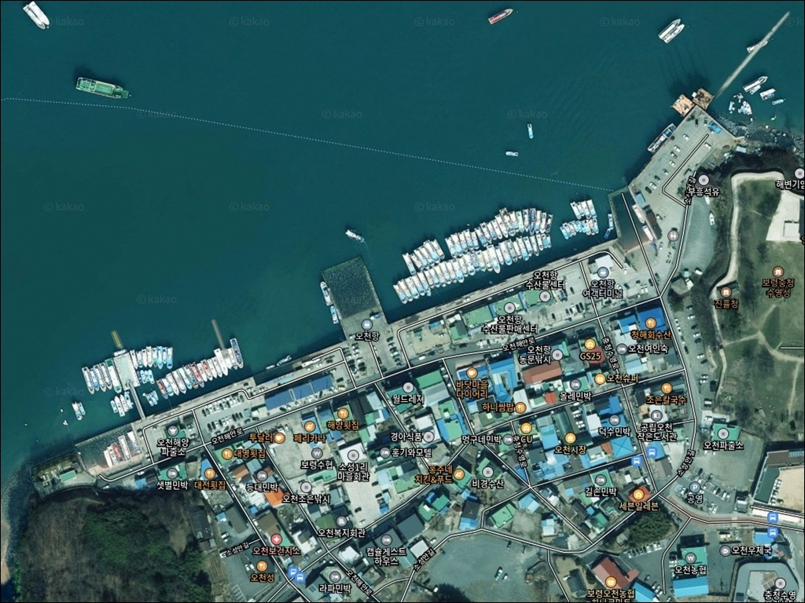
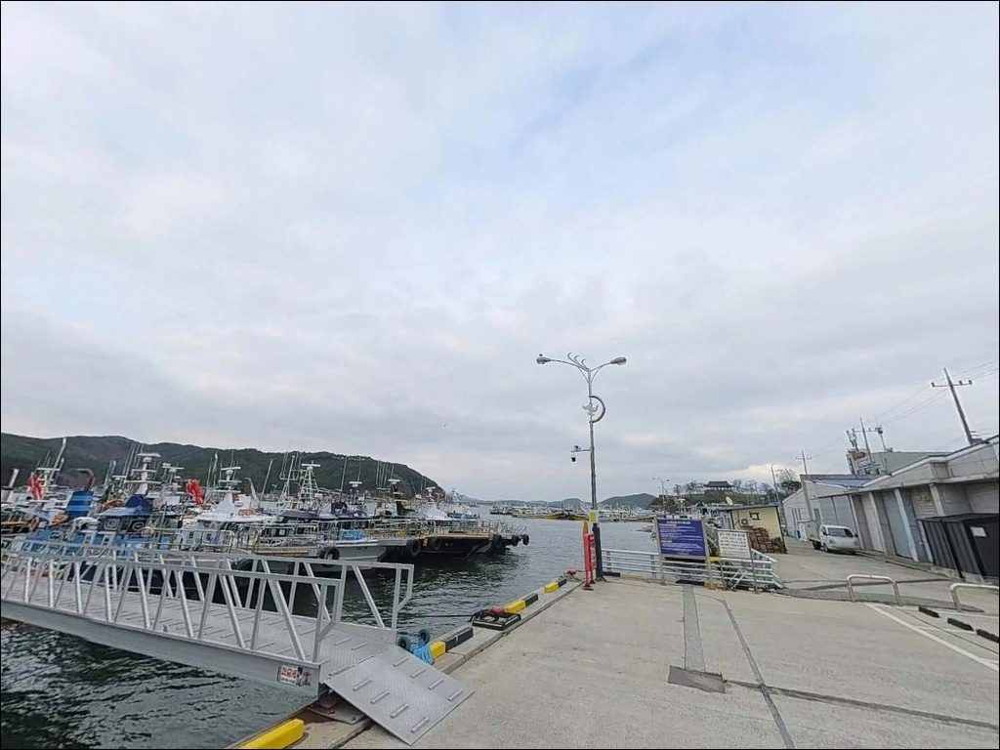
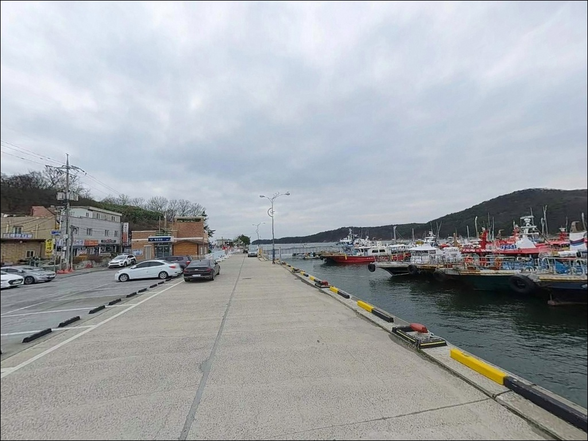
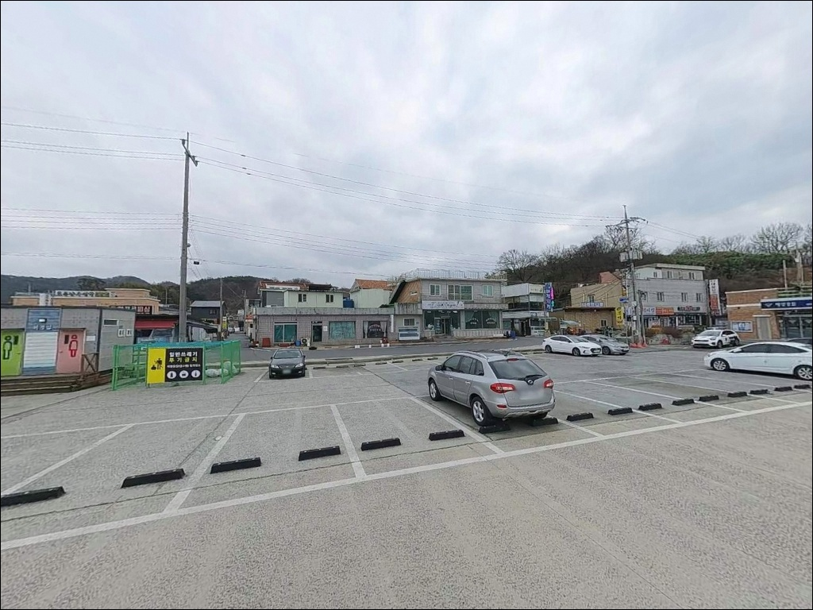
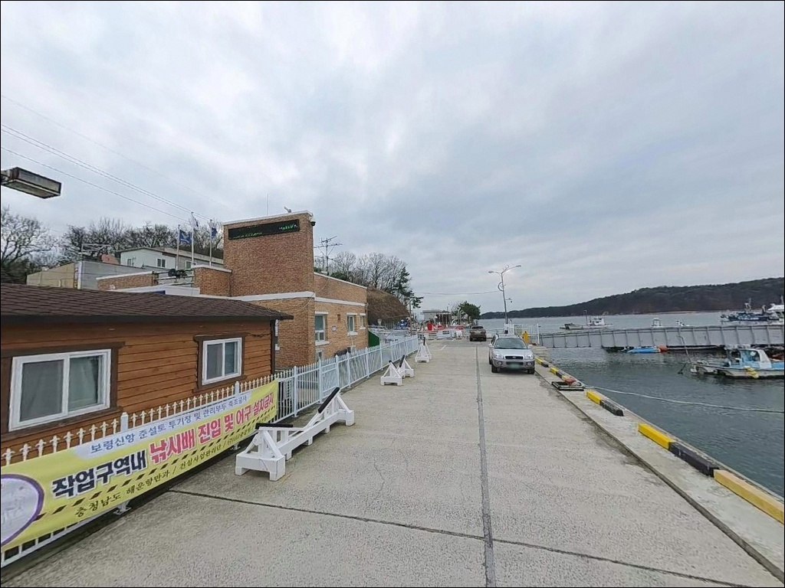
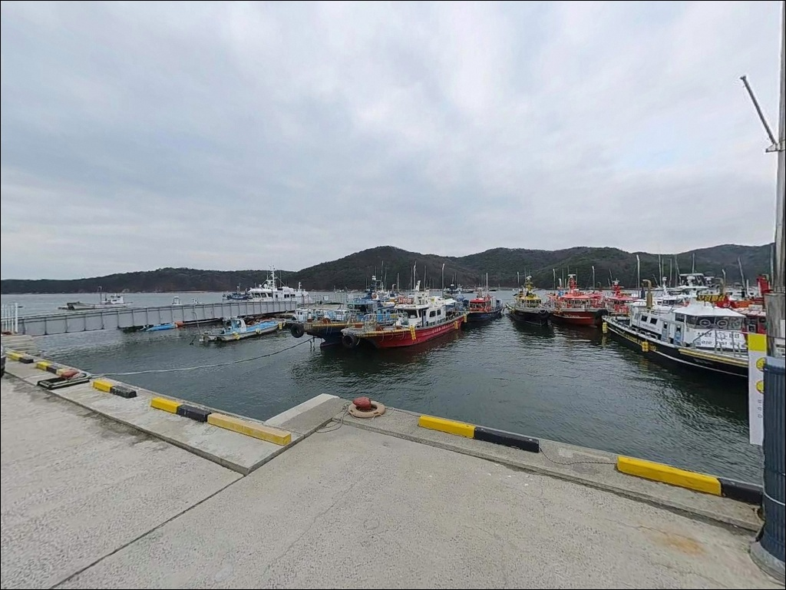
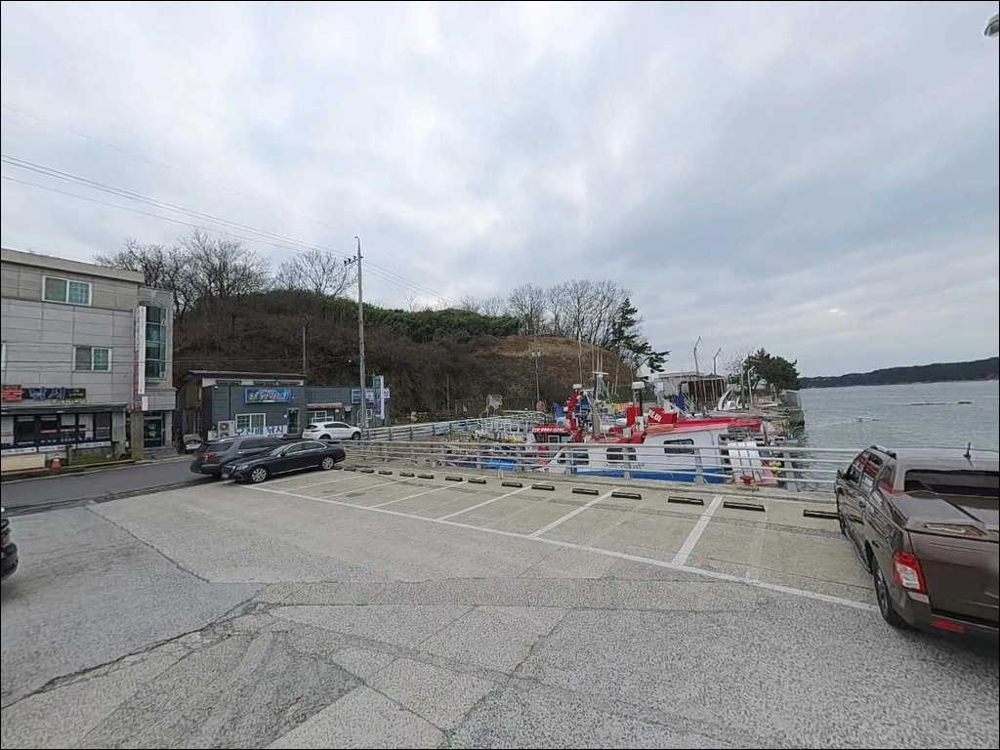
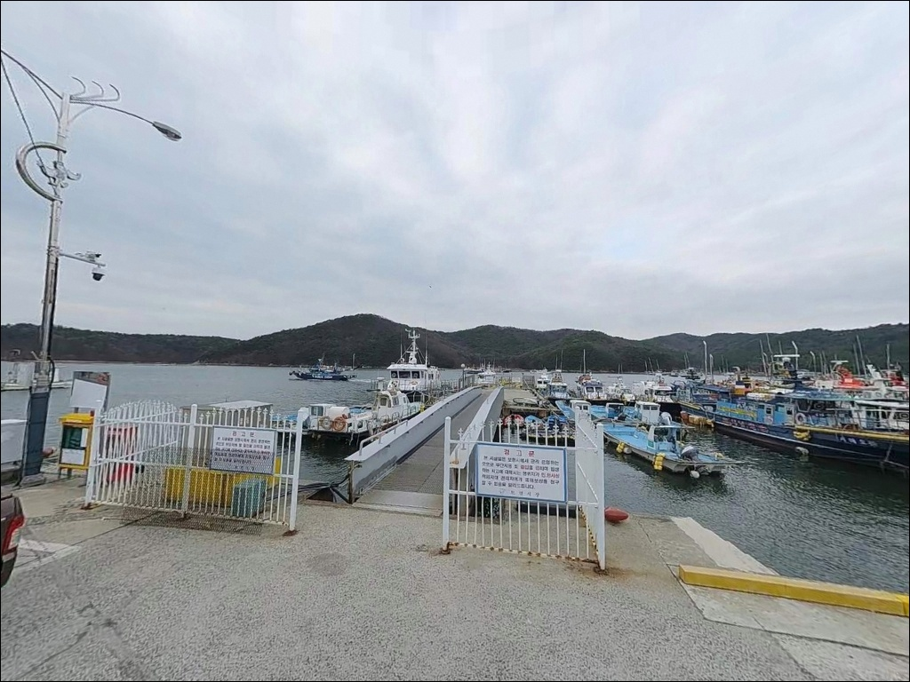
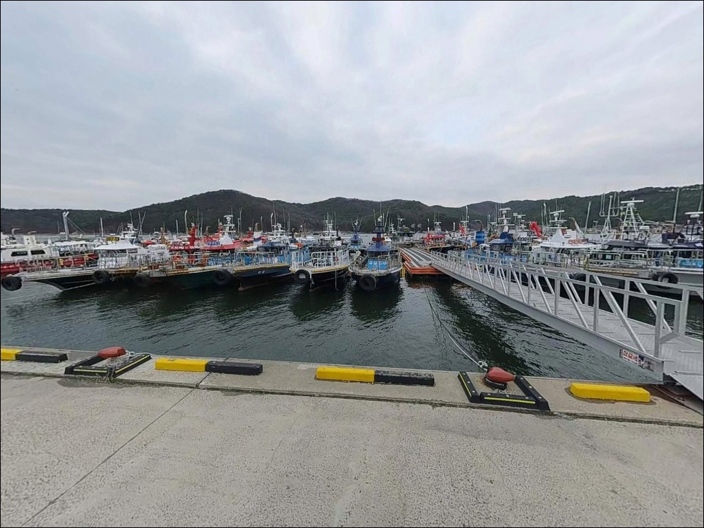

오천항, 충남 보령시 잔잔한 물결과 어울리는 차박, 낚시 한적한 포인트
이 페이지에는 광고(제휴 링크 포함)가 있으며, 광고 링크를 통해 구매하면 운영자가 판매 수익 또는 수수료를 받을 수 있습니다. 포인트 사진: 카카오맵 스카이뷰·로드뷰. 이 페이지의 지도·사진 이미지는 카카오맵의 실제 서비스 이미지와 다를 수 있습니다.


포인트 안내
오천항
충남 보령시 오천면 소성리 700-88
오천항에는 별도의 방파제가 없습니다.
방파제 끝단 자리를 기대하고 찾아가면,
선착장 구조 앞에서 계획이 어긋납니다.
이 항구는 천수만 내만의 자연 차폐 지형을 이용한
선착장형 국가어항으로,
배낚시 출조가 메인이고
지상 낚시는 보조적인 형태입니다.
충남 보령시 오천면 소성리에 자리한 오천항은
1971년 국가어항으로 지정된 서해안 대표 배낚시 거점입니다.
주꾸미·갑오징어·우럭·광어를 대상으로 하는
선상낚시 선단이 다수 등록되어 있으며,
가을 시즌에는 전국 낚시인이 몰리는 포인트이기도 합니다.
이 글은 오천항의 선착장 구조, 지상 낚시 가능 구간,
차박 여건, 주변 인프라, 대안 포인트에 집중합니다.
조황 단정이나 특정 시즌 보장은
이 글의 범위에 포함되지 않습니다.

1. 진입 동선과 주차 환경
서해안고속도로 광천 IC에서 천북 방향으로 진입한 뒤
오천항 이정표를 따라 오천해안로를 이용하면
항구까지 포장도로로 접근할 수 있습니다.
평지 해안에 위치한 항구라 경사나 비포장 구간 없이
승용차부터 SUV·캠핑카까지 진입이 수월한 편입니다.
항 내부 공간이 넓어 일반 차량 기준 회차도 비교적 수월합니다.
주차는 소성안길 33(소성리 691-75)의 공영주차장과
소성안길 70(부흥석유 앞)의 공용주차장
두 곳을 기준으로 삼는 것이 효율적입니다.
두 곳 모두 배낚시 선단 홈페이지에 동일하게 기재된
실재가 확인된 주차장으로,
항구에서 도보 이동이 가능한 거리입니다.
단, 가을 주꾸미·갑오징어 시즌 주말에는
이른 새벽부터 주차 경쟁이 치열해지는 편입니다.
배낚시 출조 차량과 지상 낚시 방문객이 동시에 몰리는 구조라,
성수기 방문이라면 이른 시간 진입을
기본 전략으로 잡는 것이 좋습니다.

2. 차박 환경과 야간 체류 여건
오천항에서의 차박은 배낚시 출조를 앞둔
대기형 체류로 보는 것이 현실적입니다.
공영주차장을 기반으로 하룻밤 머무는 방식이며,
어항 특성상 야간에도 어선 입출항과
관련 차량 이동이 이어지는 구조라
조용한 차박 분위기를 기대하기는 어렵습니다.
항 인근에는 수산물판매센터, 횟집, 낚시 관련 상가가 밀집해 있어
저녁 시간까지는 불빛과 통행이 꾸준합니다.
심야 시간 이후에는 상가 조명이 줄지만,
어선 이동이 남아 있어
완전한 고립형 차박 환경은 아닙니다.
프라이버시나 정숙한 체류를 원하는 분이라면
대안 포인트를 먼저 검토하는 편이 좋습니다.
야간 시야 확보는 비교적 양호한 편입니다.
국가어항 특성상 선착장과 도로를 따라
가로등과 선착장 조명이 갖춰져 있습니다.
배낚시 출조 전날 밤 체류 목적이라면
이 항구의 야간 환경이 크게 불편하지는 않습니다.


3. 주변 편의시설 및 인프라 현황
오천항 인근 편의시설은 서해안 어항 중에서도
잘 갖춰진 편입니다.
항구 바로 앞에 오천항수산물판매센터가 운영 중이며,
키조개, 활어, 수산물 등을 구입할 수 있습니다.
오천해안로를 따라 횟집과 칼국수 등 식당이
다수 밀집해 있어 식사 해결에 어려움이 없습니다.
항 인근 소성안길 70에 주유소가 위치하며,
반경 10km권 안으로 이동하면
대천항 일대 대형 수산시장과
낚시 소품점을 이용할 수 있습니다.
출발 전 소모품이나 장비를 챙기지 못했다면
대천 방면으로 이동하는 것이 효율적입니다.
한 가지 주의할 점은
대산지방해양수산청의 정비공사가
이 일대에서 진행 중입니다.
공사 구간에 따라 선착장 일부 이용이 제한될 수 있으니
방문 전 현장 안내 표지를 확인하는 편이 안전합니다.

4. 방문 전 반드시 챙겨야 할 준비사항
오천항 방문에서 가장 먼저 확인할 것은
물때입니다.
천수만은 서해 중에서도 조수간만의 차가 큰 해역으로,
썰물이 깊어지면 선착장 주변 수심이 급격히 낮아지고
갯바위 구간 접근 가능 범위가 달라집니다.
바다타임에서 오천면 기준 물때를 확인하고
들물 타이밍을 계산해두는 것이 기본 준비입니다.
배낚시 출조 목적이라면
해당 선단의 예약 상황을 사전에 확인해야 합니다.
가을 시즌 주말에는 선단 예약이 빠르게 마감되는 경향이 있으며,
당일 출항 가능 여부를 확인하지 않고 방문하면
배를 타지 못하는 상황이 생길 수 있습니다.
서해 내만 선착장에서 빠지기 쉬운 실수는
어선 이동 동선을 고려하지 않고 자리를 잡는 것입니다.
오천항은 전국 최다 어선 등록 항구 수준의 어항으로
입출항이 빈번하므로,
선착장 양 끝단 공간을 먼저 파악하고
조업 방해가 되지 않는 위치에 자리를 잡는 것이 기본 매너이며,
구명조끼는 선착장 낚시 시에도 착용이 원칙입니다.

5. 방파제 없는 선착장에서
지상 낚시 자리를 찾는 기준
오천항은 서해의 여러 섬과 반도 지형이
파도를 막아주는 천수만 내만에 위치합니다.
별도의 방파제 없이 자연 차폐 지형을 이용한 선착장 구조라
기상이 나쁜 날에도 항 내 파고 영향이 적은 편입니다.
이 구조는 배낚시 출조 기지로는 안정적이지만,
방파제 끝단 포인트 개념은 적용되지 않는다는 점을
방문 전 이해해 두어야 합니다.
지상 낚시 가능 구간은 선착장 양 끝단과
항 외곽 인근 갯바위 구간입니다.
선착장 내항 쪽은 수심이 얕고 어선 이동이 잦아
채비 운용에 제약이 생길 수 있으며,
찌낚시나 가벼운 채비 운용에 어울리는 구간입니다.
선착장 끝단이나 외곽 방향은
들물 타이밍에 수심이 확보되면서
원투 채비나 루어 운용이 가능해집니다.
서해 조수간만의 차를 모르고
갯바위 구간에 진입했다가,
들물이 빠르게 차오르는 상황에
미처 대응하지 못하는 경우가 있습니다.
진입 전 바다타임에서 조수 방향을 확인하고
탈출 동선까지 염두에 두는 것이 안전한 접근 방식입니다.
최신 조황은 방문 전에 꼭 검색해 보시기 바랍니다.


6. 오천항에 어울리는 낚시 스타일
이 포인트에서 가장 잘 맞는 낚시는
배낚시(선상낚시)입니다.
천수만 주변 해역은 주꾸미·갑오징어·우럭·광어가
시즌별로 반응하는 구조이며,
오천항에 등록된 선단이 이 시즌에 맞춰 운영됩니다.
가을 시즌 갑오징어·주꾸미 배낚시는
이 포인트의 가장 강한 콘텐츠입니다.
지상 낚시에서는 에깅을 먼저 고려할 수 있습니다.
선착장 주변을 걸어다니며 에기를 던지는
워킹 에깅 방식이 가을철에 어울리며,
들물 타이밍에 선착장 외곽으로 이동하면
조류 흐름이 살아나는 구간에 닿을 수 있습니다.
원투낚시도 선착장 외곽 구간에서 시도할 수 있습니다.
들물 시간대에 수심이 확보되는 구간에서
봉돌을 멀리 던져 바닥을 탐색하면
우럭·노래미·붕장어 등을 기대해 볼 수 있는 지형 조건입니다.
루어낚시는 선착장 끝단에서 항 입구 방향으로
조류 흐름이 생기는 들물 타이밍에 운용하는 방식이 어울립니다.
오천항 선착장 외곽은
들물이 시작되는 타이밍에
루어와 원투 채비가 살아나는 구간입니다.

7. 오천항이 여의치 않을 때의 대안 포인트
오천항에 인파가 너무 많거나
지상 낚시 여건이 맞지 않는다면
무창포항 방파제를 첫 번째 대안으로 봅니다.
보령시 웅천읍에 위치한 무창포항은
방파제 구조가 갖춰진 포인트로,
원투낚시와 루어 운용이 가능합니다.
오천항보다 지상 낚시 접근성이 좋은 편이며,
방문 전에 "무창포항 조황"으로 검색해 두는 편이 좋습니다.
남쪽으로 이동하면 대천항 방파제가 있습니다.
편의시설과 수산시장이 잘 갖춰져 있어
보급과 낚시를 병행하기에 좋은 구조입니다.
규모가 크고 포인트 다양성이 높아
처음 보령 권역을 방문하는 낚시인이라면
대천항을 기점으로 삼고 탐색하는 방식도 효율적입니다.
보령방조제도 이 권역에서 주목할 만한 대안입니다.
차량 접근 후 방조제 위에서
원투와 루어 채비를 병행할 수 있는 구조이며,
오천항 인근 해역에서 조류가 받는 구간을 찾을 때
함께 탐색해 볼 수 있는 동선입니다.

배낚시 출조 거점으로 쓰면
가장 잘 맞는 항구입니다
선상낚시를 전제로 오천항을 찾는다면
이 항구는 서해 중부에서 선택지가 가장 많은 출조 기지입니다.
가을 주꾸미·갑오징어 시즌에 선단 예약을 잡고,
전날 저녁 공영주차장에 자리를 확보한 뒤
이른 아침 출항하는 배낚시 대기형 일정에
이 항구의 구조가 잘 맞습니다.
반면 방파제 지상 낚시를 기대하고 방문하면
선착장 구조 앞에서 계획을 바꿔야 합니다.
방문 목적을 먼저 정하고,
물때·주차·공사 구간 세 가지를 확인하고 출발하면
의도한 시간을 낭비 없이 쓸 수 있습니다.
서해 내만의 잔잔한 물 위에 배를 타고 나가
주꾸미 에기를 내리는 가을 출조를 계획한 분이라면
오천항은 그 계획에 가장 잘 맞는 항구이며,
배낚시 후 선착장 주변에서 하룻밤 대기하는
차박 일정도 이 항구의 성격과 자연스럽게 어울립니다.